Este site é uma lembrança de aniversário, feito por Vinicius Klinger para Bruna Luisa.
Para:
Bruna Luisa
Doce como algodão-doce
"Amigos são como vinhos, os velhos estão sempre presentes em ocasiões especiais"
Amigos são seres muito especiais e eu sei que sabe muito bem disso baby. Você valoriza amigos tanto quanto eu! Então nada mais justo que deixar que alguns dos seus amigos também tenham um espaço, para poderem deixar um recadinho pra você! Essas mensagens são todas pra você, não esqueça de agradece-lás depois, heim?!
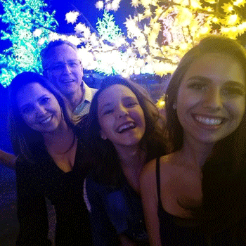
O que te falar nessa dia tão especial?
São tantas coisas para te dizer, tantos momentos para relembrar, mas o que eu realmente desejo é que: você seja muito feliz, que todos seus sonhos tornen-se realidade, e que em cada conquista eu possa estar ao seu lado para aplaudir e vibrar com tua felicidade, mas se por acaso alguma coisa não sair tão perfeito quanto você deseja, eu estarei ao seu lado para te apoiar sempre.Te amo filha além do infinito e tenho muito orgulho de você. Feliz aniversário é o que deseja tua família. 😍😘
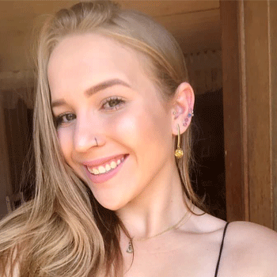
Nesse dia tão especial eu não poderia deixar de te desejar tudo de mais lindo que existe. Você é uma pessoa incrível e merece tudo de bom que o universo tem pra você. Quero te desejar muita paz, saúde, felicidade e todo sucesso do mundo, que você tenha muitas conquistas em sua vida.
E nesse dia quero também agradecer pela amiga maravilhosa, sincera e verdadeira. Obrigada por todos os momentos juntas, por sempre estar do meu lado, por sempre vir correndo quando eu te ligo, por vir passar a noite comigo. Obrigada por ser você!
Espero do fundo meu coração que nossa amizade dure anos e anos, que possamos ter mais momentos loucos juntas. Comemorar a caloura de medi ano que vem, ir na sua formatura, tomará muitos corotinhos.
Seja muito feliz amiga, eu te amo demais.
Feliz aniversário você é minha luz!
Obs: eu não esqueci que você não me deu parabéns no meu aniversário kkk
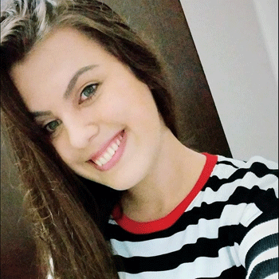
Feliz aniversáriooo 🥳🥳
Que Deus te ilumine sempre, saiba que estarei aqui sempre contigo, agradeço muito pelo que a nossa amizade se tornou, que mesmo com essa distância gigante nada mudou entre nós ❤️ Você é meu pedacinho que ficou aí, te amoo muitoo aproveita seu dia 😍
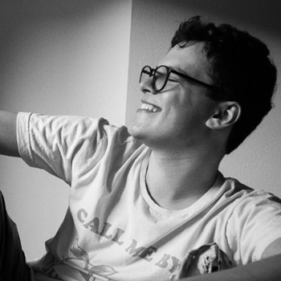
Amiga, primeiro quero te desejar feliz aniversário, também quero que você saiba o quão importante você é pra mim e te desejo toda a felicidade do mundo 💖
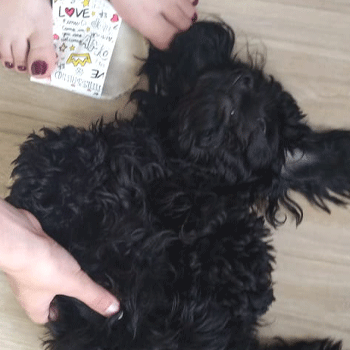
Mamãe Mamãe Mamãe Mamãe Mamãe Mamãe Mamãe Já dei 186 parabéns pra mamãe hoje! Parabéeeeeens!!! 187! Acho que vou dar atenção e alegria pra mamãe vou sair correndo bem loca e latir pora ela, ela fica bem feliz e começa a falar igual tonga comigo kkkkk adoro! Parabéeeeeeeeeeeeeeeeens mamãe!! 188! Próxima vez que o bonitão do namorado dela vir aqui vou latir pra ele pq tenho muitos ciúmes.
Feliz aniversário Bru!! Você é uma pessoa incrível, desejo tudo de melhor em sua vida. Agradeço demais pelos momentos, ajudas e risos, pode contar com o ruivao quando precisar! Aproveita seu dia, adoro você!💚💚💚
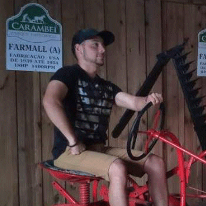
Bruna, nesse dia quero te desejar um feliz dia das crianças pra vc que é uma eterna criança. Continue sendo essa menina com um coração bondoso que vc tem pois essa é sua essência. Feliz aniversário! 🎉🎂
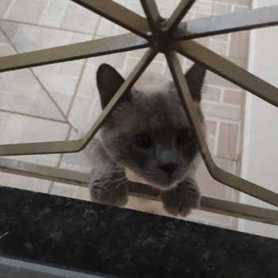
Salve man! Fiquei sabendo que hoje é niver daquela mocinha bonitassa que aparece aqui de vez em quando. Acho que ela nunca me viu pq eu fico olhando de longe, bem escondido mesmo... Manda um parabéns e um feliz aniversário lá pra ela man? Mó consideração...
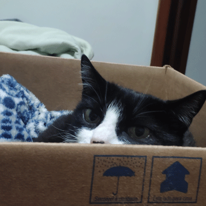
Aniversário de quem? Ta me acordando pra isso cara?
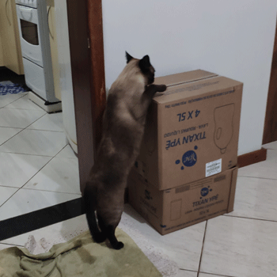
Oooooooooooorra ai sim! Aniversário da bonitona da Bruna, manda um parabéns bem top pra mim pra ela, beleza? Eu só não posso mandar pq to ocupado tentando encontrar aquele pedaço de barbante que eu tava surrando ontem... Ele conseguiu fugir de mim, cê bota fé?
Oii Bru,ainda lembra de mim? Skjssk
Cara, vim passar pra te desejar feliz aniversário e agradecer pelo ano incrível de aprendizado que me proporcionou ano passado, foi uma convivência que pra mim foi muito proveitosa e levo essa amizade com muito carinho,msm que n sejamos mais tão próximos.
Como seu sobrenome diz,vc é Luz, ilumina as relações mais sinceras,pq se tem alguém q n faz nem questão de mentir simpatia ou forçar amzd é vc kkk.
Tenho uma admiração muito grande por vc e torço intensamente pelo seu sucesso, futura doutora. Conte comigo para exatamente tudo, independente se estamos distantes ou n, amizade nunca será quem fala cntg todo dia,e sim aquele q está disposto a te estender a mão a qlqr momento. ♥️
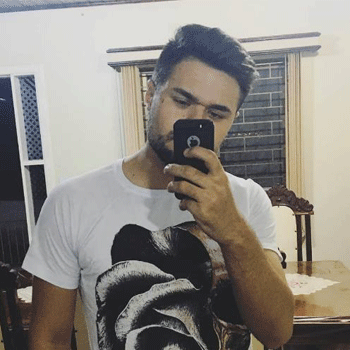
Feliz aniversário Bruna, te desejo muitas felicidades você sabe que é especial, uma pessoa com um bom coração e que sempre quer que as pessoas em sua volta estejam bem. Sou muito grato por sua amizade, espero que continue sendo essa pessoa maravilhosa que você é. Mais uma vez, parabéns pelo seu dia!
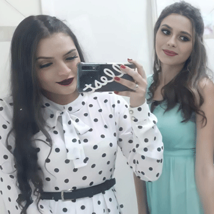
Luisa,
a vida é um quebra-cabeça, feito de peças boas e ruins, na minha vida você é uma das peças de ouro. Bru eu não poderia ter uma irmã mais velha melhor que você, te tenho por perto desde que me conheço por gente, e sou grata por cada momento, por cada brincadeira, por cada bagunça, por cada briguinha (de criança) kkkk; sou grata pelas gargalhadas que só dou contigo, grata pelo seu apoio, e pela certeza de que sempre vou poder contar contigo.
Feliz aniversário minha princesa, você me enche de orgulho, obrigada por ser meu porto seguro, você merece toda a felicidade do mundo!
Eu te amo infinitamente♥️
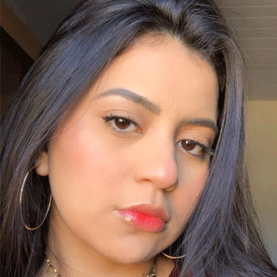
Nem sei como começar a falar, mas sei o quanto a sua amizade me faz bem! Nós somos tão próximas mesmo estando distantes no dia a dia. Agradeço a Deus por ter te conhecido a tanto tempo, também por cada coisa que já passamos juntas. Sinto muito falta dos nossos momentos, das nossas tonguices, das nossas conversas sérias e engraçadas da madrugada quando eu posava na sua casa pra gente ir pra escola, ou quando você ia lá em casa kkkkk. Eu te amo demais, é clichezinho mas você é como se fosse uma irmã pra mim, esteve comigo em TODOS os momentos importantes da minha vida, e estará em todos os próximos.
Sei que a vida sempre nos leva para rumos e caminhos diferentes, mas os laços que criamos irá nos unir para sempre, seja o tempo que for, onde estejamos ou até mesmo quem iremos nos tornar. Nada mudará.
Eu te amo, e pode contar comigo pra tudo, pra qualquer coisa que eu sempre estarei aqui, te prometo!
Enfim, feliz aniversário, muita saúde e prosperidade pra você, que você consiga realizar as suas metas e os seus sonhos, acredito muito no seu potencial, e sei que você é boa em tudo que você faz!! Que você seja muito felizzzz, parabéns ❤️